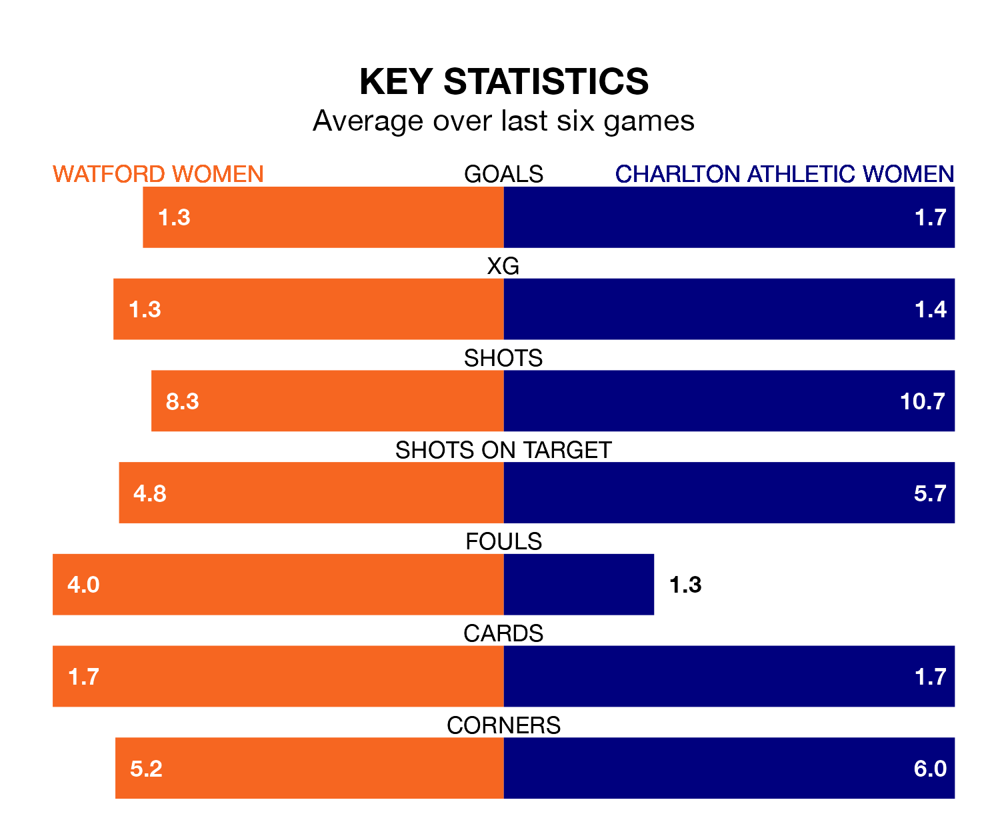

Struggling Watford Women face Charlton Athletic Women at Grosvenor Vale on Sunday looking to build on a win in their last league outing.
After securing all three points with a 2-0 victory over Birmingham City Women on February 4, Watford sit 11th in the FA Women's Championship.
They travel to play a Charlton Athletic side fourth in the standings, who were held in their last match, 1-1 against Lewes Women.
With 18 goals in 15 games so far this season, Watford are scoring at below the league average rate with 1.2 goals per game. And they are conceding more than average, letting in 30 goals at a rate of 2.0 per game.
Charlton Athletic, meanwhile, are above average scorers, with 1.5 goals per game, compared to a league average of 1.4. They have conceded 0.9 goals per game.
In Sian Rogers, the away side can rely on one of the league's safest pair of hands. She has kept five clean sheets in her 12 appearances this season, and only one other 'keeper – Sunderland Women's Claudia Moan – has been able to prevent the opposition scoring on more occasions in the FA Women's Championship.
In the hosts' net, Safia Middleton-Patel has two clean sheets in three games. She has conceded a goal every 90 minutes, 60% more often than the 147 minutes between goals for Rogers.
In the last five years, Watford and Charlton Athletic have played each other on four occasions. Watford won one of them and Charlton Athletic the other.
On average, Watford scored 0.8 goals and Charlton Athletic 3.5 in those matches.
Their last meeting was on September 10, when Watford won 3-2 away.
Watford are in mixed form in the FA Women's Championship, with two wins and two draws from their last six games.
With three wins and three draws over that period, Charlton Athletic's form is better – they have taken 12 points from 18, compared to Watford's eight.
Updated: 10:08 (UTC), 23/02/24